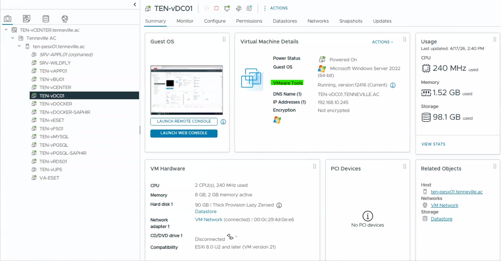

Objective
This check verifies the status of VMware Tools on virtual machines. It reviews whether VMware Tools are installed, running, and whether the reported version status is current or outdated.
This is a verification-only control. No VMware Tools installation or upgrade is performed as part of this check.
Prerequisites
- Access to vSphere Client
- Read or monitoring permissions
- Access to ESXi hosts and virtual machines
Open vSphere Client
Log in to the vSphere Web Client using a web browser. Access the vCenter instance via its IP address or FQDN.

Check VMware Tools Status
Select a virtual machine and review the VMware Tools status from the Summary tab.
- VMware Tools installed
- Status: Running
- Version marked as Current or Up to date
- No VMware Tools related warnings

Result Interpretation
- ✅ OK – VMware Tools installed and current or up to date
- ⚠️ WARNING – VMware Tools installed but outdated
- ❌ NOK – VMware Tools missing or not running